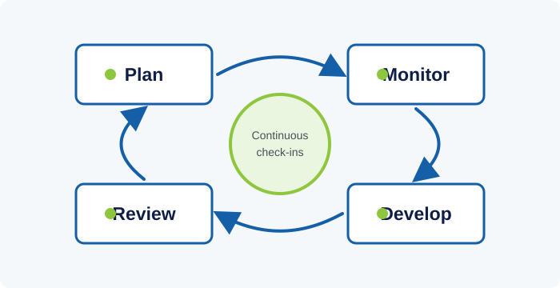

Tier 1
Performance management is often reduced, in practice, to a single annual appraisal form. Done well, it is instead a continuous cycle - setting clear objectives, monitoring progress, coaching along the way, and reviewing outcomes fairly - that connects individual effort to organizational results.
1. Performance Management as a Continuous Cycle, Not an Annual Event
A widely cited weakness of traditional appraisal systems is that they compress a full year of work into a single retrospective conversation, often disconnected from what actually happened month to month. Modern performance management practice - reflected in guidance from bodies like the Chartered Institute of Personnel and Development (CIPD) - instead frames it as an ongoing cycle with four connected stages: planning (setting objectives and expectations), monitoring (tracking progress and removing obstacles), developing (building capability through coaching, feedback, and learning), and reviewing (evaluating results and informing decisions such as recognition or further development).

The shift toward continuous check-ins over purely annual reviews reflects a practical concern: feedback loses value the further it is separated in time from the behavior or result it addresses. A manager telling a staff member in December about a project that went off track in March gives that person little chance to have corrected course when it mattered. Regular, shorter check-ins - monthly or quarterly - keep feedback close enough to the work that it can actually change outcomes.
None of this makes formal annual or mid-year reviews obsolete. They still serve an important function: stepping back from day-to-day detail to assess the bigger picture, calibrate ratings fairly across a team, and make decisions about development or reward that shouldn't be made informally. The point is that a good formal review should contain no real surprises, because it is summarizing a year of ongoing conversation rather than delivering feedback for the first time.
2. Setting Objectives That Actually Drive Performance
Objectives that are vague ('improve customer service') are difficult to plan around and even harder to assess fairly at review time. The SMART criteria - Specific, Measurable, Achievable, Relevant, Time-bound - remain a widely used starting discipline for turning a general aspiration into something a staff member can actually act on and be evaluated against.
A separate, equally important discipline is distinguishing outcome-based objectives from purely activity-based ones. 'Respond to 95% of member enquiries within 48 hours' measures a result; 'spend more time on member enquiries' measures effort with no guarantee it produces a better result. Objectives set purely around activity can reward busyness without rewarding impact, which over time can quietly misdirect an entire team's energy.
Objectives also need to cascade sensibly from organizational strategy, discussed in the Strategic Management category, down to the individual level, so that a staff member's personal goals are visibly connected to something the institution as a whole is trying to achieve. Objectives set in isolation from strategy - however well-written individually - can end up pulling in different, even contradictory directions across departments.
3. Feedback and Coaching Along the Way
Effective feedback is specific and grounded in observed behavior or results rather than general impressions or character judgments - 'the report was submitted three days after the deadline without advance notice' is actionable in a way that 'you're not organized' is not. This distinction matters because feedback framed around specific, changeable behavior is far more likely to be accepted and acted on than feedback that feels like a judgment of someone's character.
Coaching-oriented approaches to performance conversations - asking questions that help a staff member work through a problem themselves, rather than simply issuing instructions - tend to build longer-term capability more effectively than directive feedback alone, though both have a place depending on the situation and the staff member's experience level. A newer employee learning an unfamiliar process may need more direct instruction; an experienced staff member facing a novel problem may benefit more from a coaching conversation that draws out their own judgment.
Multi-source or '360-degree' feedback, which gathers input from peers and, where relevant, internal or external stakeholders in addition to a direct manager, can surface blind spots that a single manager's view might miss - particularly for roles that involve significant cross-team coordination. It requires careful handling, however, since poorly implemented 360 processes can become a vehicle for score-settling rather than genuine development feedback.
4. Watch: The Puzzle of Motivation
Dan Pink lays out research showing that autonomy, mastery, and purpose drive performance more reliably than traditional carrot-and-stick rewards - directly relevant to how objectives and feedback are framed in this lesson.
5. Fair Reviews and Avoiding Common Rating Biases
Performance ratings are vulnerable to a well-documented set of cognitive biases. The 'recency effect' causes reviewers to overweight events from the last few weeks before a review at the expense of the rest of the year. The 'halo effect' causes strong performance in one visible area to inflate a reviewer's assessment of unrelated areas. Central tendency bias pushes reviewers toward safe, average ratings for everyone, which flattens out real differences in performance and undermines the credibility of the whole system.
Calibration meetings - where managers across a department or institution compare ratings before they are finalized - are a common safeguard against these biases, helping ensure that a 'strong performer' rating means roughly the same thing across different teams and different managers, rather than depending heavily on which manager happens to be reviewing a given staff member.
Finally, performance data has value beyond the individual review conversation. Aggregated across a department or institution, it can reveal systemic issues - a role with consistently unclear objectives, a process that reliably produces missed deadlines regardless of who staffs it - that point to a process or design problem rather than an individual performance problem. Treating performance management purely as an individual, private matter misses this organizational learning opportunity.
6. A Real Overhaul: Adobe's Move to "Check-In"
In 2012, software company Adobe scrapped its traditional annual review process entirely. Internal surveys had found the old system was consuming roughly 80,000 hours of manager time a year - equivalent to 40 full-time staff - while leaving many employees feeling stack-ranked and undervalued rather than motivated. In its place, Adobe introduced "Check-In": an ongoing, quarterly conversation between manager and employee about expectations, feedback, and career growth, with no forced ranking or single annual rating attached.
The change is one of the most widely studied examples of the continuous-feedback approach described in Section 1. Adobe has reported that voluntary attrition fell after the switch and that a large majority of employees now say their manager is genuinely open to feedback from them. The case is a useful reminder that the mechanics discussed in this lesson - cascading objectives, frequent check-ins, calibration - are not just theory; institutions of real scale have re-built their systems around them.
References & Further Learning
Independent sources for readers who want to go deeper than this lesson, cited so you can verify the material yourself.
-
Read
CIPD - Effective Performance Management: A Guide for HR Professionals
Practical guidance from the UK's chartered HR body on running a fair, continuous performance management cycle.
-
Watch
CIPD - Changing Trends in Performance Management
Short video with CIPD's Jonny Gifford on how performance management practice has shifted away from once-a-year appraisal.
-
Website
CIPD - Performance Management Resource Hub
Ongoing collection of CIPD guides, factsheets, and research on performance management practice.
-
Tool
SHRM - Free Performance Review Form Template
A downloadable review form template from the Society for Human Resource Management, adaptable to a department's own objectives.
-
Case
Stanford Graduate School of Business - Adobe's "Check-In" Case Study
The full academic case behind the Adobe example discussed above.
Knowledge Check: Performance Management
Finish the reading above, then take the test to check your understanding.
Question 1 of